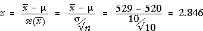

Difference between parameter and estimate
If the value of the sample statistic is close to the hypothesised value of the parameter, there is no reason to doubt the null hypothesis. However if they are far apart, the data are not consistent with the null hypothesis and we should conclude that the alternative hypothesis holds.
A large distance between the estimate and hypothesized value is evidence against the null hypothesis.
Statistical distance
How do we tell what is a large distance between, say,  and µ? The empirical rule says that we expect
and µ? The empirical rule says that we expect  to be within two standard errors of µ (about 95% of the time). If we measure the distance in standard errors, we know that 2 (standard errors) is a large distance, 3 is a very large distance, 1 is not much.
to be within two standard errors of µ (about 95% of the time). If we measure the distance in standard errors, we know that 2 (standard errors) is a large distance, 3 is a very large distance, 1 is not much.
The number of standard errors is
In general, the statistical distance of an estimate to a hypothesised value of the underlying parameter is
| z = | estimate − parameter |
Select Normal distribution from the pop-up menu on the bottom right to replace the simulation with this normal distribution. From its tail area, we can calculate (without a simulation) that the probability of getting a sample mean as far from 520 as 529 is exactly 0.0044. This is the exact p-value for the test. We again conclude that there is strong evidence that the population mean, µ, is not 520. Finally, consider the statistical distance of our estimate of µ, 529 gm, from the hypothesised value, 520 gm.  Being 2.846 standard deviations from the mean is unusual, again providing strong evidence that the population mean, µ, is not 520. Select 'Statistical distance' from 520 from the middle pop-up menu. This displays both the simulation results and exact normal distribution in terms of z-values. |